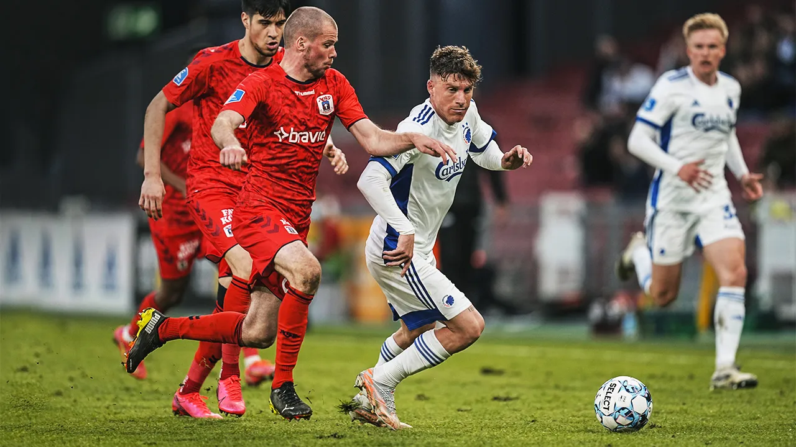
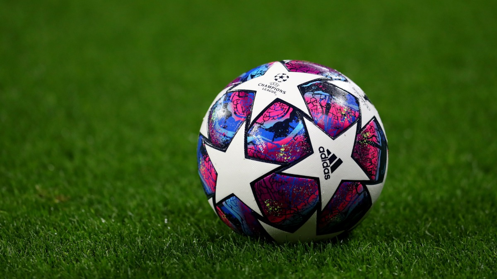
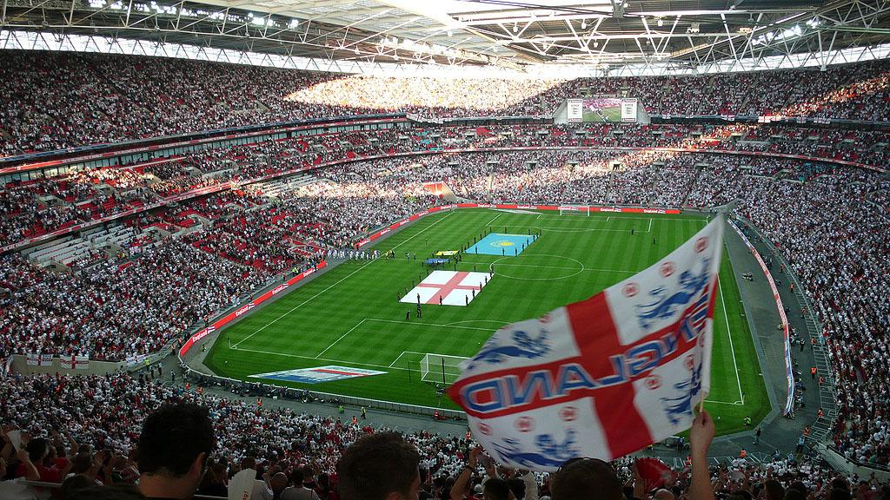
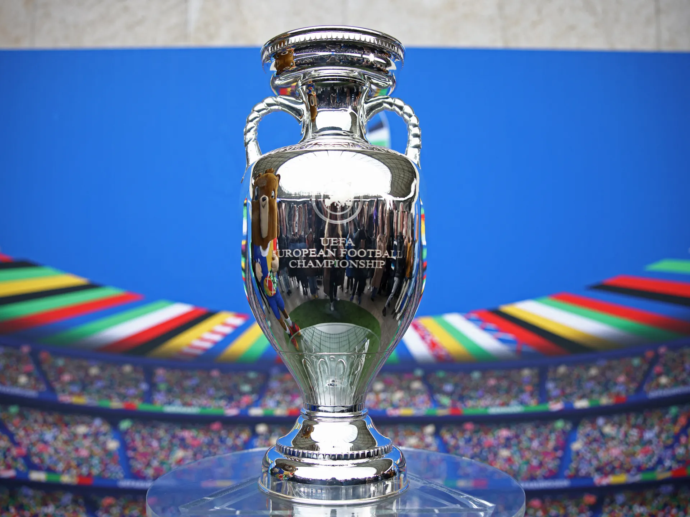
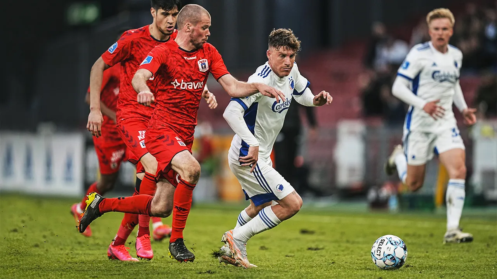
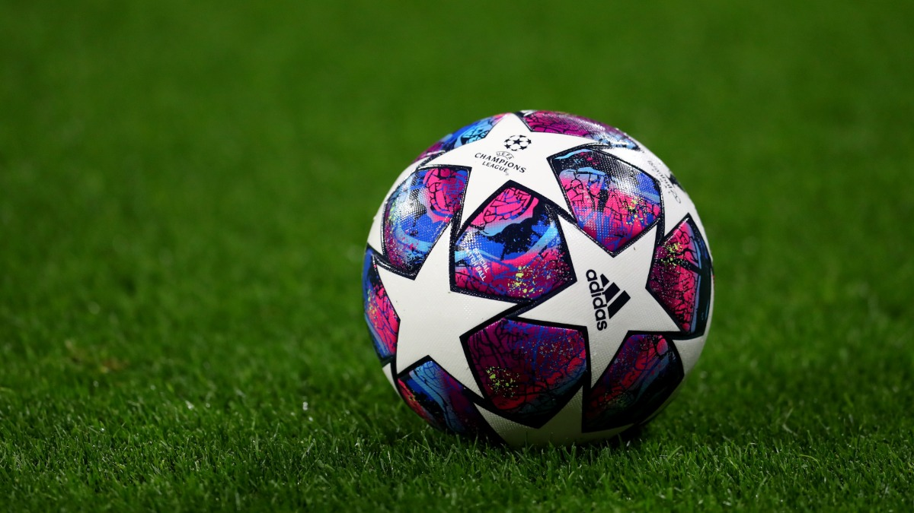
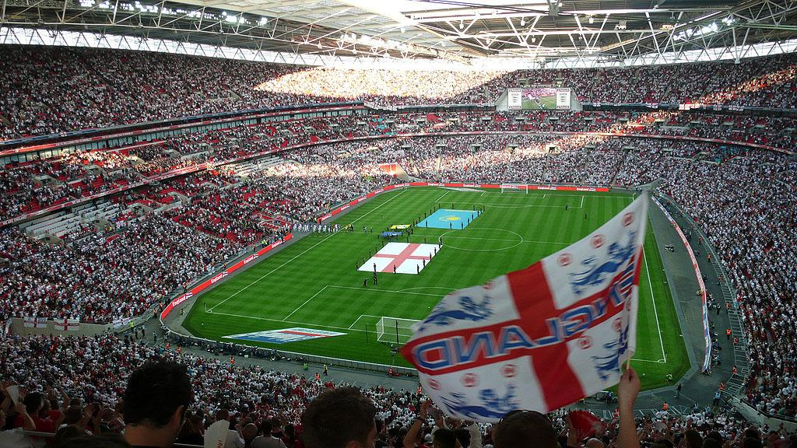
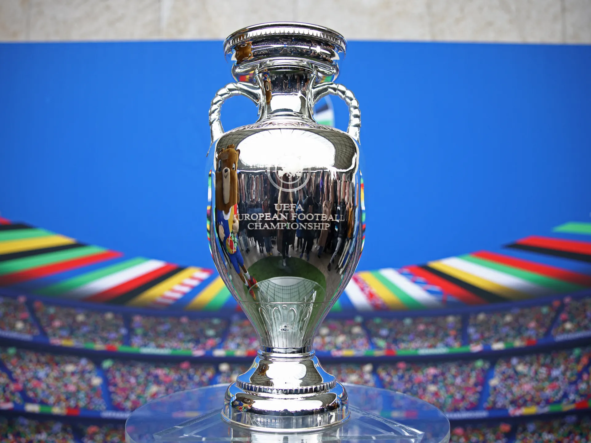

European football has its roots in the late 19th century when clubs began to form in cities and towns across the continent. This era set the foundation for a sport that would grow into a global powerhouse. Iconic tournaments, such as the UEFA Champions League, showcase the pinnacle of club competition, while national leagues continue to be a battleground for pride and history.
Throughout the decades, memorable matches, tactical evolutions, and charismatic figures have left an indelible mark on the sport, making European football a continually evolving narrative of passion and skill.
 






